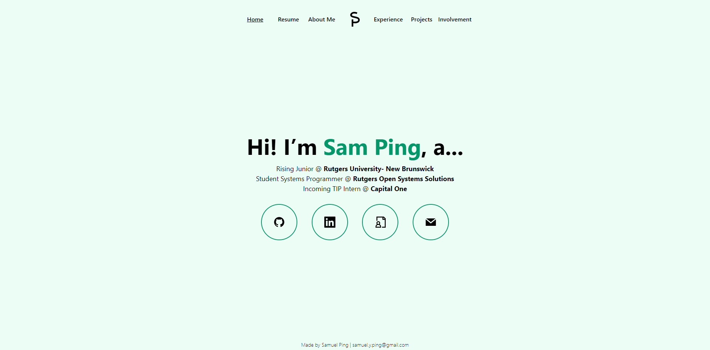
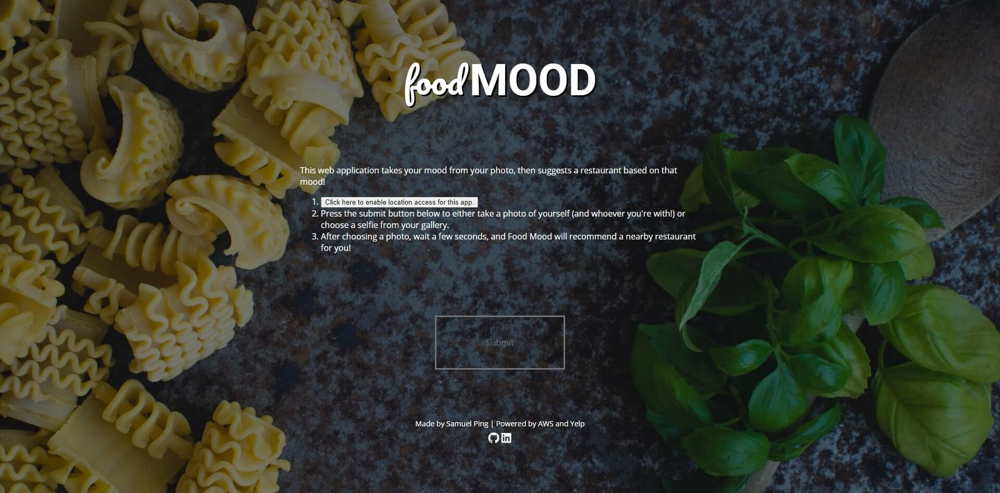

Home
Resume
About Me
Experience
Projects
Involvement
Personal Projects

Personal Website
May 2020 - Present
Next.js, Tailwind CSS, Netlify CMS, …
My personal website!
COVID Tracker
October 2020 - November 2020
React.js, Express.js, Google Firebase
A web app that quickly gives you COVID-19 data.
chat_stat
November 2020
Python 3
Explore your messaging history with your friends!

Food Mood
March 2020 - August 2020
React.js, Express.js, Node.js, AWS (Lambda, …
Web app that takes your photo, detects your visible mood, and suggests a restaurant based off that mood!
Street Cred
August 2020
React.js, Python, AWS Lambda & …
Web app that calculates your credit score and generates feedback based on the five main categories that make up your credit score.
Yelp Review Scraper
May 2020 - June 2020
Python 3, Beautiful Soup 4
A web scraper intended to gather a large dataset of restaurants.
Wild Walk
May 2020
React.js, Express.js, MongoDB Atlas
A web app that encourages you to go exploring!
Made by Samuel Ping |
samuel.y.ping@gmail.com